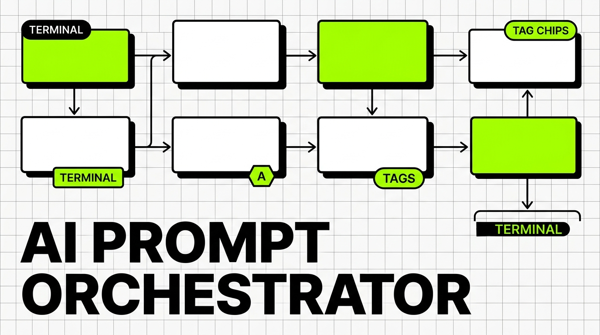

Projects
& Labs
以“AI 辅助编程 + 干中学”落地的确定性开源系统。涵盖 AI 工作流编排、DAG 状态机、受限解码与硬件实验。 Deterministic open-source systems built via AI Pair Programming & Learning by Doing. Covering AI workflow orchestration, DAG state machines, constrained decoding, and hardware experiments.
FLAGSHIP · CORE PROJECT

PatchCat
AI 提示流编排器与 DAG 状态机
AI Prompt Flow Orchestrator & DAG State Machine
纯前端、本地优先运行的确定性 AI 工作流编排系统。通过 Kahn 拓扑排序调度避免环路死锁，内置 L1 Logits 掩码受限解码与 L2 Zod 契约双层防线拦截脏输出，提供 5 秒 Web Worker 脚本沙箱与死循环看门狗熔断。
A client-only, local-first deterministic AI workflow orchestrator. Employs Kahn's topological sort for acyclic graph scheduling, two-tier constrained decoding (Logits masking + Zod contract), and Web Worker watchdog sandbox to circuit-break infinite loops.